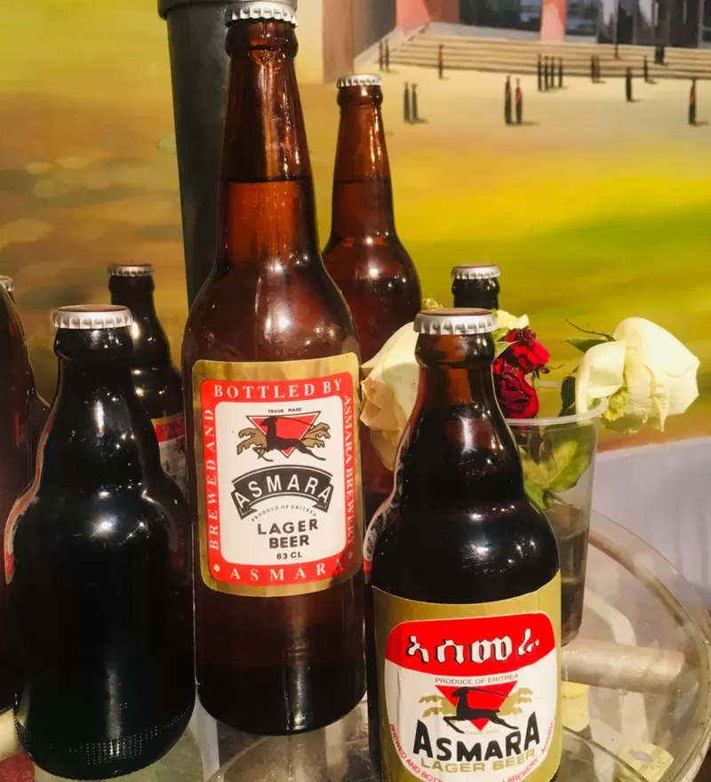
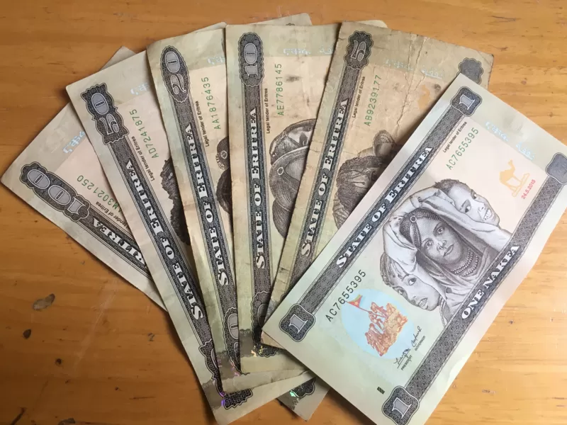
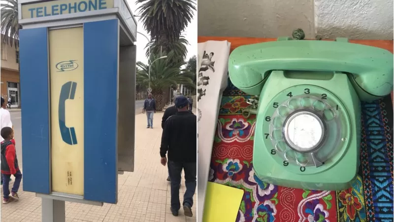
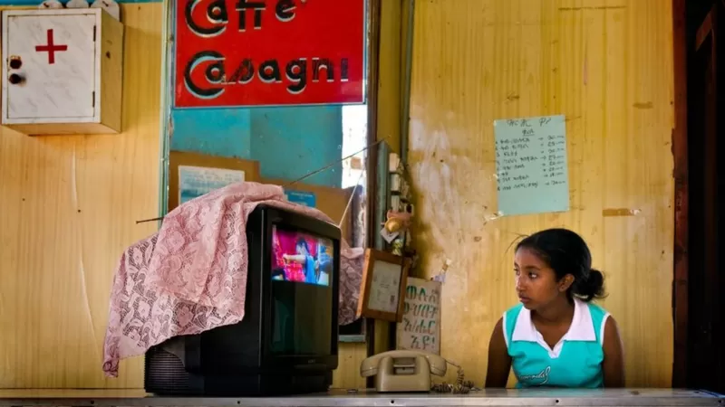

ብዙ ነገር ''አንድ'' የሆነባት ሃገር ኤርትራ
21 ሚያዝያ 2022

ከጥቂት ሳምንታት በፊት የቢቢሲ ጋዜጠኞች በኤርትራ አዘጋጅነት ሲካሄድ የነበረውን ከ15 ዓመት በታች የሴካፋ ውድድርን እንድንዘግብ ፍቃድ ተሰጥቶን ወደ ኤርትራ እቅንተን ነበር።
በኤርትራ በነበርን ቆይታ ያየነውን እና የሰማነውን በሦስት ክፍሎች አሰናድተናል። ሁለተኛውን ክፍል እንደሚከተለው ቀርቧል። የመጀመሪያውን ክፍል ለማንበብ ከታች ያለውን ማስፈንጠሪያ ይጫኑ። ማስታወሻ፡ በኤርትራ በነበረን ቆይታ የዘገባ ርዕሶቻችን እና እንቅስቃሴዎቻችን የተገደቡ ነበሩ። በጽሁፉ ውስጥ የተጠቀሱት ዓመታት እንደ ጎርጎሪሳውያኑ አቆጣጠር ነው።
- የሲሲሊ ማፊያዎችን የሚገዳደሩት ናይጄሪያውያን ሴቶች
- ማሌዢያ፡ ዝንጀሮዎች የተማሪውን ስልክ ሰርቀው ፎቶ ተነስተው መለሱለት
- በአንድ ጀንበር ሚሊየነር የሆነው ታንዛኒያዊ ሌላ 2 ሚሊዮን ዶላር አገኘ
ብዙ ነገር ''አንድ'' የሆነባት ሃገር ኤርትራ
በኤርትራ አንድ ብቻ የሆኑ ብዙ ነገሮች አሉ። አንድ አይነት ቢራ፣ አንድ አውሮፕላን፣ አንድ ሥርዓት ያለው የባንክ አገልግሎት፣ እንድ የቴሌኮም አገልግሎት አቅራቢ፣ አንድ የፖለቲካ ፓርቲ፣ አንድ የቴሌቪዝን ጣቢያ . . .
አንድ ቢራ
"ሜሎቲ" ወይም አሥመራ ቢራ ከ1939 ጀምሮ በኤርትራ ሲጠመቅ ቆይቷል። ይህ ለኤርትራ ብቸኛ የሆነው ቢራ በበርካቶች ዘንድ ትዝታ እና ተወዳጅነትን ያተረፈ ነው። የቢራ ፈላጊውን እና የአቅርቦት መጠኑ ተመጣጣኝ ስላልነበረ ከቅርብ ዓመታት በፊት አንድ ሰው ሁለት ቢራ ብቻ ገዝቶ እንዲጠጣ ነበር የሚፈቀድለት። ከሁለት በላይ ደጋግሞ መጠጣት የፈለገ፤ ቢራ የማይጠጣ ሰው ወደ መጠጥ ቤት ይዞ በመሄድ የዚያን ሰው ኮታ ይጠጣ እንደነበር ሰምተናል። አሁን ላይ በቢራ ፋብሪካው በተካሄደ ለውጥ የቢራ አቅርቦቱን በቀላሉ ማግኘት ይቻላል። ከኢትዮጵያ ጋር የሚያዋስኑ የድንበር በሮች በተከፈቱ ጊዜ የኢትዮጵያ ቢራ ምርቶች አሥመራን አጥለቅልቀዋት እንደነበረ በዚህም የአንድ ሜሎቲ ቢራ ዋጋ ከ25 ናቅፋ ከ11-15 እንደወረደ ነዋሪዎች ነግረውናል።
አንድ አይነት የባንክ ሥርዓት
በኤርትራ የሚገኙት ባንኮች በመንግሥት ባለቤትነት የሚተዳደሩ ናቸው። በቁጥር ሦስት የሆኑት የመንግሥት ባንኮች በአድናቆት አፍ የሚያስከፍት ሕግ አላቸው። ይህም የባንኩ ደንበኞች በባንኩ ካላቸው ገንዘብ በወር ከ5 ሺህ ናቅፋ በላይ እንዲያወጡ አይፈቅድም። መኪና ለመግዛት 100 ሺህ ናቅፋ በጥሬ ገንዘብ ያስፈለገው ወጣት ይህን ያክል ገንዘብ በጥሬ ለማግኘት ወር እየጠበቀ 5000 ናቅፋ ሲያወጣ አንድ ዓመት እንደስቆጠረ ነግሮናል። መንግሥት ይህን መሰል ውሳኔ ማስተላለፍ ለምን እንደፈለገ የጠየቅናቸው ነዋሪዎች፤ ሁለት የተለያየ አተያዮች አሏቸው። የመጀመሪያው መንግሥት ከዚህ ውሳኔ የደረሰው የዋጋ ግሽበትን ለመቆጣጠር እና የህዝቡን የቁጠባ ባህል ለማዳበር ነው ሲሉ ሌሎች ደግሞ "መንግሥት ምንም አይነት የንግድ እንቅስቃሴ እንዲኖር ስለማይፈልግ የገንዘብ ዝውውር እንዳይኖር አድርጓል" ይላሉ። ኤቲኤም (ገንዘብ መክፈያ ማሽን) በኤርትራ የለም። አሥመራ በነበረን ቆይታ ያገኘነው ወጣት፤ ድንበር ክፍት በተደረገ ጊዜ ወደ መቀሌ አቅንቶ በነበረበት ወቅት ''ሰዎች ከማሽን ብዙ ገንዘብ ወጪ ሲያደርጉ'' ማየቱ በእጅጉ እንዳስደነቀው አጫውቶናል። ኤቲኤም በሌለባት ሃገረ ኤርትራ ሌላው ያስተዋልነው፤ በምግብ እና መጠጦች ላይ ተጨማሪ የእሴት ታክስ አለመጣሉ ነው።
አንድ የቴሌኮም ኩባንያ
ልክ እንደ ኢትዮጵያ ሁሉ በኤርትራ ያለው የቴሌኮም አገልግሎት አቅራቢ ድርጅት በመንግሥት ባለቤትነት የሚተዳደር ሲሆን ኤሪቴል ይባላል። በኤርትራ የቴሌኮሚዩኒኬሽን አገልግሎት ደካማ ነው። ሲም ካርድ ማግኘት እጅግ አዳጋች ነው። ጎብኚዎች ሲም ካርድ ማግኘት አይችሉም። ነዋሪዎችም ቢሆኑ ሲም ካርድ ማውጣት ቢፈልጉ በየደረጃው የሚገኙ የመንግሥት መስሪያ ቤቶች ይሁንታንና ፈቃድን ሲያገኙ ነው የሲም ካርድ ባለቤት የሚሆኑት። 07 ብሎ የሚጀምረው የኤርትራ የሞባይል ስልክ ቁጥር ባለ 8 አሃዝ ብቻ ነው። ለምሳሌ የኤርትራ ሞባይል ቁጥር ይህን ሊመስል ይችላል 07 123 456። አብዛኛው ማህብረሰብ በፈቀደው ወቅት የሲም ካርድ ባለቤት መሆን ስለማይችል አብዝቶ የሚጠቀመው የመንገድ ላይ የሕዝብ ስልኮችን ነው። የተለያዩ ዋጋ ያላቸውን ካርዶች ከኤሪቴል መደብሮች ብቻ በመግዛት ወደ ሃገር ውስጥ እና ከሃገር ውጪ መደወል ይቻላል። ሲም ካርድ ቢገኝም፤ የሞባይል ዳታ የለም። በስልክዎ ላይ ኢንተርኔት መጠቀም የሚችሉት የዋይፋይ አገልግሎት በሚገኙባቸው ስፍራዎች ብቻ ነው። ዋይፋይ ቢገኝም፤ የኢንተርኔት ፍጥነት እጅግ ቀሰስተኛ ነው። ማህበራዊ ሚዲያዎችን ለመቃኘት ደግሞ ቪፒኤን መጠቀም ግድ ይላል። ዓለም አቀፍ የቴሌኮሚዩኒኬሽን ሕብረት ሪፖርት እንደሚጠቁመው፤ ከኤርትራ ሕዝብ ውስጥ የኢንተርኔት ተጠቃሚው ብዛት ከ2 በመቶ በታች ነው በማለት አገልግሎቱ ምን ያህል ዝቅተኛ መሆኑን ይጠቁማል።
አንድ የቴሌቪዥን ጣቢያ
በመንግሥት ባለቤትነት የተያዘው ኤሪ-ቲቪ ከኤርትራ ሆኖ በብቸኝነት የሚያሰራጭ የቴሌቪዥን ጣቢያ ነው። በቅርቡ ኤርትራ በዓለማችን ቁጥር አንድ የመገናኛ ብዙሃን አፈና የሚፈጸምባት ሃገር ናት ተብለ ተፈርጃ ነበር። የጋዜጠኞችን እስር፣ ጋዜጠኞችን ለመሰለል የሚፈቅዱ ሕጎችን እንዲሁም በኢንተርኔት እና በማህበራዊ ሚዲያ አገልግሎት ላይ የሚጣለውን ገደብ ከግምት ውስጥ በማስገባት የጋዜጠኞች መብት ተሟጋቹ ሲፒጄ ኤርትራ ከሰሜን ኮሪያ በላይ ቁጥር አንድ አፈና የሚፈጸምባት ሃገር ናት ይላል። • ኤርትራ በምሽት ድንበር ማቋረጥን ከለከለች ከኤርትራ በመቀጠል ሰሜን ኮሪያ፣ ቱርኬሚስታን፣ ሳዑዲ አረቢያ፣ ቻይና፣ ቬትናም፣ ኢራን፣ ኢኳቶሪያል ጊኒ፣ ቤላሩስ እና ኩባ ከ2ኛ እስከ 10ኛ ደረጃን ይዘው ተቀምጠዋል። በኤርትራ መገናኛ ብዙሃን የመንግሥት ልሳን ሆነው ነው የሚያገለግሉት የሚለው ሲፒጄ፤ ገለልተኛ የሆኑ ጋዜጠኞች ወደ ሃገራቱ ሲያቀኑም ቅርብ ክትትል ይደረግባቸዋል።
አንድ የፖለቲካ ፓርቲ
ሃገሪቷን የሚያስተዳድረው እና በፕሬዝዳንት ኢሳያስ አፈወርቂ የሚመራው የሕዝባዊ ግንባር ለዴሞክራሲና ፍትህ ፓርቲ (ሕግዴፍ) በሃገሪቱ የሚንቀሳቀሰው ብቸኛው የፖለቲካ ፓርቲ ነው። ሦስት አስርት ዓመታትን ሊደፍን የተቃረበው የፕሬዝዳንት ኢሳያስ አስተዳደር ዘመን በኤርትራ የሚንቀሳቀስ ተቃዋሚ የፖለቲካ ፓርቲ ታይቶ አታውቅም። ይህ ብቻም አይደለም ሥራ ላይ ውሎ የሚያውቅ ሕገ-መንግሥት የለም። ምርጫ ተካሂዶ አያውቅም። ወደፊትም ስልጣን ላይ የሚገኘው መንግሥት ምርጫ የማካሄድ ሃሳብ የለውም ሲሉ ተቺዎች ይናገራሉ።
የኃይማኖት ነጻነት
በኤርትራ ፍቃድ ያላቸው እና መንግሥት እውቅና የሰጣቸው ኃይማኖቶች አራት ብቻ ናቸው። የኦርቶዶክስ ክርስትና፣ የሱኒ እስልምና፣ የሮማ ካቶሊክ ቤተ-ክርስቲያን እና የሉተራን ወንጌላዊ ቤተ-ክርስቲያን ናቸው። • ኤርትራ ፖለቲከኞችን እና ጋዜጠኞችን እንድትለቅ ተጠየቀ ሌሎች የእምነት ተቋማት እንደ ሕገ-ወጥ ነው የሚቆጠሩት። መንግሥት የተቀሩትን የእምነት ተቋማትን የውጪ ሃገራት አጀንዳ ማስፈጸሚያ መሳሪያዎች ናቸው ሲል ይገልጻቸዋል። የአሜሪካ መንግሥት ዓለም አቀፍ የኃይማኖት ነጻነት ኮሚሽን የ2019 ሪፖርት እንደሚጠቁመው ከሆነ፤ ዛሬ ላይ በመቶዎች የሚቆጠሩ ኤርትራዊያን በእምነታቸው ምክንያት ለእስር እንደተዳረጉ ናቸው። የጆሆቫ ምስክሮች በእምነት ተከታዮች በኃይማኖታቸው ምክንያት በብሔራዊ አገልግሎት ላይ ለመሳተፍ ፍቃደኛ ባለመሆናቸው ዜግነት ይከለከላሉ፣ መታወቂያ ደብተር ማግኘት አይችሉም።
የድንበር በሮች መከፈት
ሁለቱን ሃገራት የሚያገናኙ አራት የድንበር በሮች ይገኛሉ። አራቱ የድንበር በሮች ዛላምበሳ - ሰርሃ፣ ራማ - ክሳድ ዒቃ፣ ሁመራ - ኦማሃጀር እና ቡሬ - ደባይ ሲማ ናቸው። በሁለቱ ሃገራት የሰላም ስምምነት ከተደረሰ በኋላ በተለያዩ ጊዜያት ክፍት ተደርገው የነበሩት አራቱ የድንበር በሮች አሁን ላይ ሁሉም ተዘግተዋል። ለድንበር በሮቹ መዘጋት በሁለቱም መንግሥታት የተሰጠ ምክንያት ባይኖርም ይፋዊ ያልሆኑ መረጃዎች የድንበር በሮቹ የተዘጉት፤ የቪዛ እና የቀረጥ ጉዳዮችን መልክ ማስያዝ በማስፈለጉ እንደሆነ ይጠቁማሉ። ዛላምበሳ - ሰርሃ፣ ራማ - ክሳድ ዒቃ እና ለሱዳን ቅርብ የሆነው ሁመራ - ኦማሃጀር በትግራይ ክልል በኩል ኢትዮጵያን ከኤርትራ ጋር የሚያገናኙ የድንበር በሮች ሲሆኑ፣ ቡሬ - ደባይ ሲማ ደግሞ በአፋር ክልል በኩል ኢትዮጵያን ከኤርትራ የሚገናኝ የደንበር በር ነው። የድንበር በሮቹ ክፍት ተደርገው በነበረበት ወቅት ከፍተኛ የሆነ የንግድ እንቅስቃሴ ድንበር እቅራቢያ ተስተውሎ ነበር። በአሥመራም የድንበር በሩ መከፈት በተለያዩ ሸቀጦች ላይ የዋጋ ለውጥ አምጥቶ እንደነበር በቆይታችን ሰምተናል። ለምሳሌ ድንበር ከመከፈቱ በፊት እስከ 10 ሺህ ናቅፋ ይሸጥ የነበረው አንድ ኩንታል ጤፍ ድንበሩ ሲከፈት ዋጋው በሚያስደንቅ ሁኔታ አሽቆልቁሎ እንደነበር ነዋሪዎች ይናገራሉ። በአሁኑ ወቅት በድንበር በሮቹ ላይ የተሽከርካሪዎች እንቅስቃሴ በመገደቡ የአንድ ኩንታል ጤፍ አሥመራ ውስጥ የተጋነነ ባይሆንም ጭማሪ አሳይቷል።